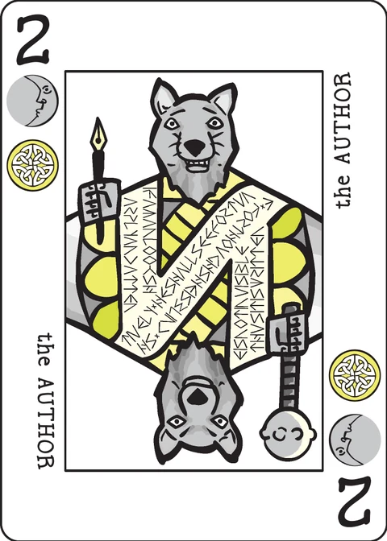

Adaman
a solitaire game of conspiracy and manipulation
You are the heir to the throne, but the monarch might live a very long time. You intend to speed things along, but it will only work if the major personalities in the kingdom back your play. You need to buy, trick, or eliminate anyone who might stand in your way.
In this game, personality cards represent different people in the kingdom who you need to control; personalities are the cards done up like face cards, with two close ups of a single figure. All of the other cards represent elements which you can use to control personalities.
Setup
Deal five cards in a row; these represent people and events occurring around the capital city.
Deal another five cards below the capital to represent resources you have at your disposal. If you turn up a personality when dealing your resources, put it in a row above the capital cards and deal another card to your resources. Repeat if the next card is a personality, and so on until you have five resources none of which are personality cards.
The row of cards above the capital represents people at the royal palace. You only place cards in the palace if you turn up a personality while dealing your resources, so there will typically be a few or even no cards in the palace. If you place a sixth card in the palace row, however, the game ends immediately. (See below.)
Game play
You may exercise your resources to control a card in the capital or palace rows. In order to do so, discard one or more cards from your resource row. The cards must all share a suit with the card you are trying to control, and the total of their ranks must be at least the rank of the target card. It is legal to discard more resource cards than needed. Aces are treated as rank 1, Crowns as rank 10.
Note that the cards discarded from your resource row do not need to share a suit with each other, provided they share a suit with the card you are trying to control.
If you control a personality, move it to the discard pile. If you control a non-personality card, move it to your resource row; you may use it later to control something else.
After a play, deal cards so that the capital row has five cards. Then deal so that your resource row has five cards; put personalities in the palace row, as above. When the deck runs out, continue to play until one of the end game conditions is met.
Ending the game
The game can end in three possible ways. One means victory, the other two mean defeat.
- You have moved all eleven of the personality cards to the discard pile. You have control of everyone who matters and can safely seize the throne. You win.
- You cannot make any further moves, but there are personality cards remaining in the deck, palace, or capital rows. Without the backing of everyone, your plan must be abandoned. All that scheming for nothing! You lose.
- There are more than five personalities in the palace row. With so many people snooping about, someone's discovered your plot. You lose utterly. It's the gallows for you, old chum.
Note that you do not win the game if you merely eliminate all of the face up personalities. If there are personality cards remaining in the draw pile, then you should continue playing. You should play resources to control cards from the capital, biding your time until the personalities turn up.
If you want to keep score, beyond just winning or losing: If you win, total up the ranks of the personality cards you control and the cards remaining in your resource row. (The ranks of the eleven personalities in the basic deck add up to 66, so it's 66 plus the ranks in your resource row.) If you lose, total up the ranks of just the personality cards you control. (With the basic deck, it will be less than 66 since you lost.) If lose utterly, you score zero.
The extended deck
I only play the game with the basic deck. If you insist on including some of the extended deck cards, here is how they might work.
The Excuse: If the Excuse turns up in the capital row, you must select one card from your resource row and put it in the capital. If the Excuse turns up in your resource row, select one card from the capital and put it in your resources. In either case, discard the Excuse.
Pawns and Courts: These are treated as being of rank 10. Adding all of them makes the game easier. If you want to make the game harder, add one or more of the extra personalities to the deck but none of the other cards.
Credits
Adaman was inspired by James Kyle's Portraits.
Adaman was designed by P.D. Magnus. These rules are copied from the Adaman page of the Decktet wiki (page revision 20, 15 April 2020) so that they can be read offline, and are used under the wiki's CC BY-NC-SA 3.0 licence. The cards themselves are by P.D. Magnus, 2008–2010, same licence.
Further reading: Adaman at BGG · Adaman in your browser